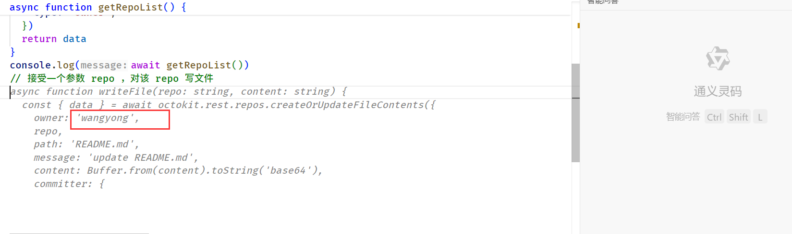

最近更新.rss.xml
| 方案名 | 评价 |
| lunr.js | 纯 js 实现的搜索库，用在纯静态站点应该是个不错的选择 |
| pagefind |  |
| tinysearch |

基于 prisma 的 cms
https://keystonejs.com/docs/guides/cli
nocodb + serverless 开始内容管理类的项目原型感觉会非常快，唯一的缺陷可能就是内存和性能了，起码需要稍微大于 0.5g 的内存才能正常的运作，而一个简单的sqlite+node 的项目内存可以控制在 100mb 一下，不过人生苦短nocodb太节约简单的增删改查时间了
微软出品的免费全链路检查，具有用户操作热点图
published:Sun, 24 Dec 2023 13:47:59 +0000
其实使用Web Audio API就能从视频中提取音频文件了，本文有演示页面，有实现代码，有详细讲解，值得一看。
published:Sun, 24 Dec 2023 13:47:59 +0000
其实使用Web Audio API就能从视频中提取音频文件了，本文有演示页面，有实现代码，有详细讲解，值得一看。
国外开发者还能听见反抗的声音，国内毫无波澜

published:Sun, 24 Dec 2023 13:47:59 +0000
其实使用Web Audio API就能从视频中提取音频文件了，本文有演示页面，有实现代码，有详细讲解，值得一看。
published:Sun, 24 Dec 2023 13:47:59 +0000
published:Sun, 24 Dec 2023 13:47:59 +0000
published:Sun, 24 Dec 2023 13:47:59 +0000
其实使用Web Audio API就能从视频中提取音频文件了，本文有演示页面，有实现代码，有详细讲解，值得一看。
其实使用Web Audio API就能从视频中提取音频文件了，本文有演示页面，有实现代码，有详细讲解，值得一看。
当我在serverless中使用prisma成功后
稍微测了一下增删改查，一点毛病没有，如果我使用过程中遇到其他问题我会更新 gist 中的代码片段

ts
app.post(api_path, async (c) => {
const req = await c.req.json();
const [payload, resHelper] = reqParser(req);
const r = await execClientRequest(payload.data)
return c.json(resHelper(r, null));
});
interface queries {
schemaHash: string;
modelName: "Proxy_api";
operation: "count";
args?: {
take: 100;
skip: 0;
select: { id: true; Wallet_id: true; Wallet: true; createdAt: true; updatedAt: true };
};
}
interface payload {
data:
| {
schemaHash: string;
operation: "$transaction";
queries: queries[];
}
| queries;
}
async function execClientRequest(op: payload["data"]) {
if (op.operation == "$transaction") {
const { queries } = op;
const actions = queries.map(execQueries);
const r = await prisma.$transaction(actions);
return r;
} else if (["findMany", "count", "update"].includes(op.operation)) {
return execQueries(op);
}
function execQueries(op: queries) {
return prisma[toLowerCase(op.modelName) as /** 类型欺骗 */ "wallet"][op.operation](op.args);
}
}
function toLowerCase(str: string): string {
return str.toLowerCase();
}
function reqParser(req: any) {
const { requestId, action, payload } = req;
return [
payload as payload,
(data: any, error: any) => {
return {
requestId,
channel: "-prisma",
action,
payload: { error, data },
};
},
] as const;
}
3.
然后在后端实现对应的接口
3.
然后在后端实现对应的接口
然后在后端实现对应的接口
1.
首先，在本地的开发项目中启动 prisma studio
1.
首先，在本地的开发项目中启动 prisma studio
首先，在本地的开发项目中启动 prisma studio
2.
通过一个小巧的 js 代码片段，将浏览器客户端请求转发到远程服务器
2.
通过一个小巧的 js 代码片段，将浏览器客户端请求转发到远程服务器
通过一个小巧的 js 代码片段，将浏览器客户端请求转发到远程服务器
js
// 请求拦截.js
(() => {
const rqwFetch = globalThis.fetch;
globalThis.fetch = async (...arg) => {
const [url, init] = arg;
const payload = JSON.parse(init.body);
if (
url.toString().endsWith("/api") &&
payload.channel === "prisma" &&
payload.action === "clientRequest"
) {
return rqwFetch("https://shenzilong.cn/studio_server/api", init);
} else {
return rqwFetch(...arg);
}
};
})();

下面分享我的具体做法:
所以我决定自己实现一个，得益于 prisma studio 所使用的api接口之简易，比我想象中花的时间更少（可能一个小时？）
当我在互联网搜索 prisma studio remote sqlite 时，我没有找到合适的方案
理所当然的我想让 prisma studio 连接到我位于 serverless 中的服务
feed:https://openapi.heartstack.space/api/wallet/56f02b47-f729-4cee-8d52-7e689032630f/forward/https://lyn.one/page-data/index/page-data.json
blog:https://lyn.one/
cron:1 20 * * 1
下面的解析器实现有问题，链接不正确，放弃治疗了，他的博客链接规则很奇怪
customParse:
js
(attr, resText, { xssDefend, elText }) => {
const res = JSON.parse(resText).result.data;
return {
title: xssDefend(res.site.siteMetadata.title),
subtitle: "",
updated: xssDefend(res.allMarkdownRemark.edges[0].node.frontmatter.date),
entryList: res.allMarkdownRemark.edges.map((entry) => {
const date = new Date(entry.node.frontmatter.date)
date.setDate(date.getDate() - 1)
return {
title: xssDefend(entry.node.frontmatter.title),
published: xssDefend(entry.node.frontmatter.date),
summary: xssDefend(entry.node.excerpt),
link: xssDefend('https://lyn.one/' + date.toISOString().split('T')[0].replace(/-/g, '/') + entry.node.fields.slug),
};
}),
};
};
feed:https://openapi.heartstack.space/api/wallet/56f02b47-f729-4cee-8d52-7e689032630f/forward/https://lyn.one/page-data/index/page-data.json
feed:https://openapi.heartstack.space/api/wallet/56f02b47-f729-4cee-8d52-7e689032630f/forward/https://lyn.one/page-data/index/page-data.json
url硬编码签名调用
feed:https://openapi.heartstack.space/api/wallet/56f02b47-f729-4cee-8d52-7e689032630f/forward/https://lyn.one/page-data/index/page-data.json
申请密钥：
子虚的联系方式